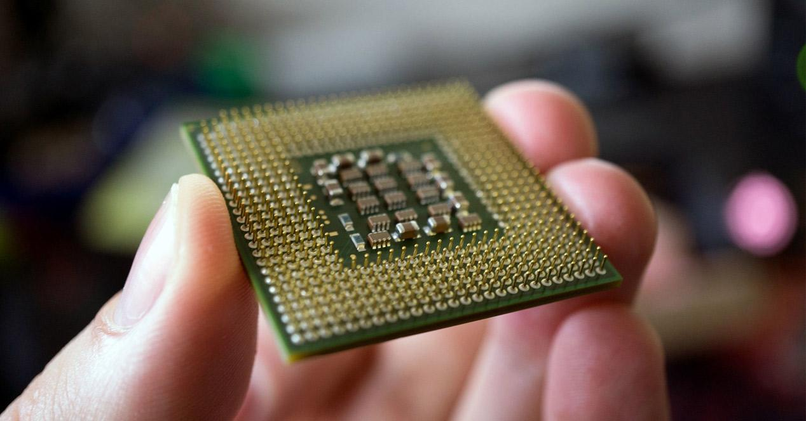
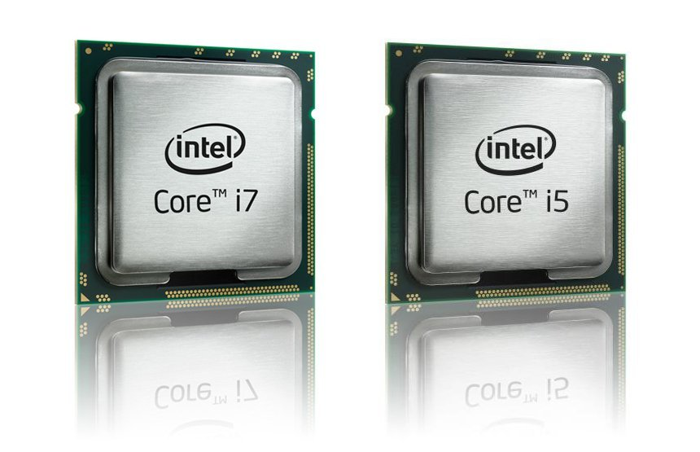
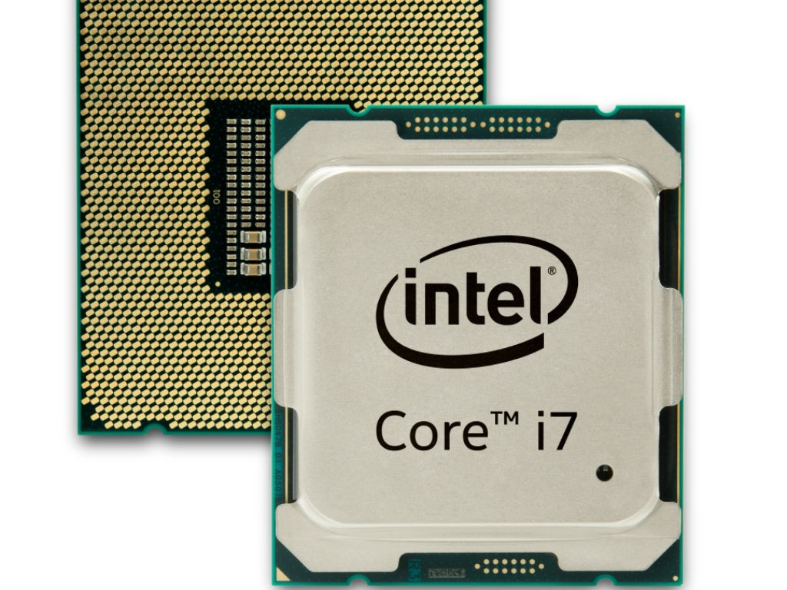
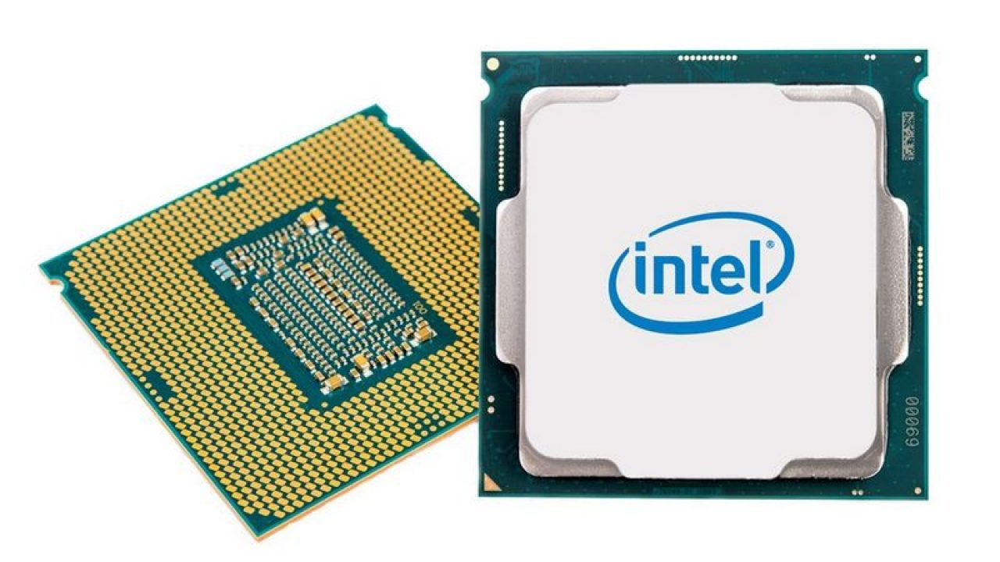
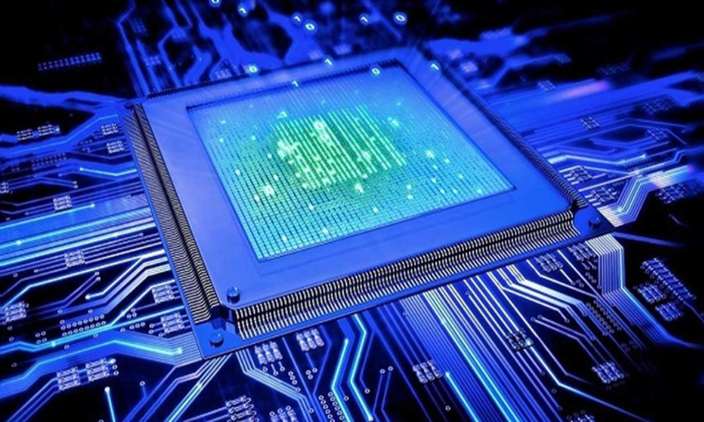
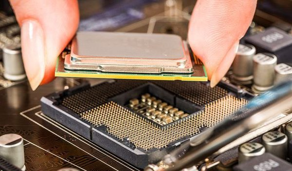

¿Cómo hacer mantenimiento preventivo a nuestro procesador?
Llevar a cabo un cuidado apropiado de los principales componentes
que forman un PC puede marcar una diferencia importante tanto en términos
de rendimiento a largo plazo como de vida útil, y no resulta especialmente complicado.
¿Qué es el Procesador?
La unidad central de procesamiento es el hardware dentro de una computadora u
otros dispositivos programables. Su trabajo es interpretar las instrucciones de un
programa informático mediante la realización de las operaciones básicas aritméticas, lógicas y externas.




Clasificación de los microprocesadores:
RISC
Las órdenes se pueden ejecutar junto con otras actividades de bajo nivel.
Realiza principalmente la tarea de cargar, descargar y recuperar datos en y desde la tarjeta de memoria.
Aparte de eso, también hace cálculos matemáticos complejos dentro de un solo comando.
Este procesador está diseñado para minimizar el número de instrucciones por programa
e ignorar el número de ciclos por instrucciones. El compilador se utiliza para traducir un
lenguaje de alto nivel al lenguaje de nivel ensamblador, porque la longitud del código es relativamente corta
y se utiliza una memoria RAM adicional para almacenar las instrucciones.
CISC
Está diseñado para reducir el costo de la memoria, porque se requiere más almacenamiento en
programas grandes, lo que resulta en un mayor costo de memoria. Para superar este número de
instrucciones por programa, se puede reducir el número de instrucciones utilizando la integración
de las operaciones en una sola instrucción.


Pasos a seguir
Los pasos para el mantenimiento preventivo al cpu son:
Retire los tornillos y colóquelos.
Retire la tapa de la carcasa.
Haga un diagrama de la posición del cable y de los componentes, para que conozcamos la ubicación de cada uno de ellos.
Desconectar los buses de datos.
Desconecte los cables de alimentación.
Desconectar el ventilador y el microprocesador
Utilice un ventilador o aire comprimido para limpiar el ventilador y el microprocesador.
Retire la tarjeta de expansión.
Quitar tarjetas de red, sonido, vídeo, etc.
Retire la placa madre.
Retire la memoria RAM.
Limpie las tarjetas con el soplador o con aire comprimido
Contactos limpios de tarjetas de expansión y memorias RAM con el borrador blanco.
Retire las unidades de almacenamiento: unidad de disquete, unidad de disco duro y unidad de CD-ROM.
Limpie externamente los componentes mencionados anteriormente con alcohol isopropílico y una toalla limpia y sin pelusas.
Desconecte los cables de alimentación de la fuente de alimentación y límpielos con el soplador o con aire comprimido.
Limpie el gabinete internamente con el soplador o aire comprimido.
Limpie el exterior con un limpiador de espuma y retírelo con una toalla limpia y sin pelusas.
Vuelva a montar la CPU y todos sus componentes.
Y listo!!!!
Información recolectada de mantenimiento.win y www.profesionalreview.com